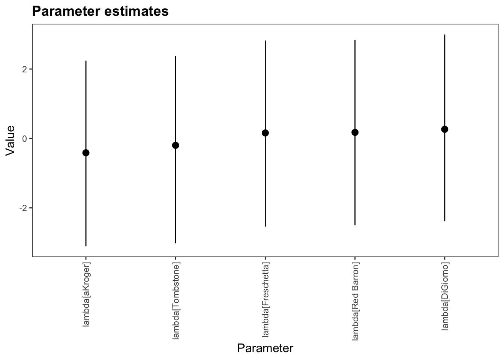

Chapter 2 Basic functionality
Although a large overview of the functionality of the bpcs is available in the official documentation (https://davidissamattos.github.io/bpcs) we provide here a short example based on the paper:
Luckett, Curtis R., Sara L. Burns, and Lindsay Jenkinson. “Estimates of relative acceptability from paired preference tests.” Journal of Sensory Studies 35.5 (2020): e12593.
library(bpcs)
library(tidyverse)
library(knitr)
options(mc.cores = parallel::detectCores())
rstan::rstan_options(auto_write = TRUE)
set.seed(99)2.1 Reading and preparing the data
This paper analyzes food preferences using paired comparisons (and compare different methods). The original data was made available in the paper and it can be found in the link:
Below we see a fragment of how the dataset looks like:
sample_n(d, size=5) %>%
kable(caption="Example of the pizza data frame") %>%
kableExtra::kable_styling(bootstrap_options = c("striped", "hover", "condensed", "responsive"))| Prod1 | Prod2 | Win1 | Win2 |
|---|---|---|---|
| Tombstone | Red Barron | 16 | 21 |
| Freschetta | DiGiorno | 20 | 18 |
| aKroger | Tombstone | 17 | 23 |
| Freschetta | Tombstone | 22 | 16 |
| DiGiorno | aKroger | 26 | 13 |
This data is in a aggregated format. That is each row contains more than one observation. For example, the first row shows that Tombstone was voted 16 times against Red Barron and Red Barron was voted 21 times against Tombstone
To use with the bpcs package, we need to expand it to a single contest per row, in a long format. We can use the function expand_aggregated_data of the bpcs package exactly for this purpose.
This leads to a data frame with 380 rows (same number of wins for 1 and 2). This function adds an id column to the data, so each row is uniquely represented (important if you will do some transformations later). Below we examplify how the expanded data looks like
dpizza <- expand_aggregated_data(d = d, player0 = 'Prod1', player1 = 'Prod2', wins0 = 'Win1', wins1 = 'Win2', keep=NULL)## player0 player1 y rowid
## 1 Tombstone Red Barron 0 1
## 2 Tombstone Red Barron 0 2
## 3 Tombstone Red Barron 0 3
## 4 Tombstone Red Barron 0 4
## 5 Tombstone Red Barron 0 5
## 6 Tombstone Red Barron 0 6
## 7 Tombstone Red Barron 0 7
## 8 Tombstone Red Barron 0 8
## 9 Tombstone Red Barron 0 9
## 10 Tombstone Red Barron 0 10
## 11 Tombstone Red Barron 0 11
## 12 Tombstone Red Barron 0 12
## 13 Tombstone Red Barron 0 13
## 14 Tombstone Red Barron 0 14
## 15 Tombstone Red Barron 0 15
## 16 Tombstone Red Barron 0 16
## 17 Tombstone Red Barron 1 17
## 18 Tombstone Red Barron 1 18
## 19 Tombstone Red Barron 1 19
## 20 Tombstone Red Barron 1 20
## 21 Tombstone Red Barron 1 21
## 22 Tombstone Red Barron 1 22
## 23 Tombstone Red Barron 1 23
## 24 Tombstone Red Barron 1 24
## 25 Tombstone Red Barron 1 25
## 26 Tombstone Red Barron 1 26
## 27 Tombstone Red Barron 1 27
## 28 Tombstone Red Barron 1 28
## 29 Tombstone Red Barron 1 29
## 30 Tombstone Red Barron 1 30
## 31 Tombstone Red Barron 1 31
## 32 Tombstone Red Barron 1 32
## 33 Tombstone Red Barron 1 33
## 34 Tombstone Red Barron 1 34
## 35 Tombstone Red Barron 1 35
## 36 Tombstone Red Barron 1 36
## 37 Tombstone Red Barron 1 37
## 38 DiGiorno Tombstone 0 38
## 39 DiGiorno Tombstone 0 39
## 40 DiGiorno Tombstone 0 40
## 41 DiGiorno Tombstone 0 41
## 42 DiGiorno Tombstone 0 42
## 43 DiGiorno Tombstone 0 43
## 44 DiGiorno Tombstone 0 44
## 45 DiGiorno Tombstone 0 45
## 46 DiGiorno Tombstone 0 46
## 47 DiGiorno Tombstone 0 47
## 48 DiGiorno Tombstone 0 48
## 49 DiGiorno Tombstone 0 49
## 50 DiGiorno Tombstone 0 50
## 51 DiGiorno Tombstone 0 51
## 52 DiGiorno Tombstone 0 52
## 53 DiGiorno Tombstone 0 53
## 54 DiGiorno Tombstone 0 54
## 55 DiGiorno Tombstone 0 55
## 56 DiGiorno Tombstone 0 56
## 57 DiGiorno Tombstone 0 57
## 58 DiGiorno Tombstone 0 58
## 59 DiGiorno Tombstone 0 59
## 60 DiGiorno Tombstone 0 60
## 61 DiGiorno Tombstone 0 61
## 62 DiGiorno Tombstone 0 62
## 63 DiGiorno Tombstone 0 63
## 64 DiGiorno Tombstone 1 64
## 65 DiGiorno Tombstone 1 65
## 66 DiGiorno Tombstone 1 66
## 67 DiGiorno Tombstone 1 67
## 68 DiGiorno Tombstone 1 68
## 69 DiGiorno Tombstone 1 69
## 70 DiGiorno Tombstone 1 70
## 71 DiGiorno Tombstone 1 71
## 72 DiGiorno Tombstone 1 72
## 73 DiGiorno Tombstone 1 73
## 74 DiGiorno Tombstone 1 74
## 75 DiGiorno Tombstone 1 75
## 76 DiGiorno Tombstone 1 76
## 77 DiGiorno aKroger 0 77
## 78 DiGiorno aKroger 0 78
## 79 DiGiorno aKroger 0 79
## 80 DiGiorno aKroger 0 80
## 81 DiGiorno aKroger 0 81
## 82 DiGiorno aKroger 0 82
## 83 DiGiorno aKroger 0 83
## 84 DiGiorno aKroger 0 84
## 85 DiGiorno aKroger 0 85
## 86 DiGiorno aKroger 0 86
## 87 DiGiorno aKroger 0 87
## 88 DiGiorno aKroger 0 88
## 89 DiGiorno aKroger 0 89
## 90 DiGiorno aKroger 0 90
## 91 DiGiorno aKroger 0 91
## 92 DiGiorno aKroger 0 92
## 93 DiGiorno aKroger 0 93
## 94 DiGiorno aKroger 0 94
## 95 DiGiorno aKroger 0 95
## 96 DiGiorno aKroger 0 96
## 97 DiGiorno aKroger 0 97
## 98 DiGiorno aKroger 0 98
## 99 DiGiorno aKroger 0 99
## 100 DiGiorno aKroger 0 100
## 101 DiGiorno aKroger 0 101
## 102 DiGiorno aKroger 0 102
## 103 DiGiorno aKroger 1 103
## 104 DiGiorno aKroger 1 104
## 105 DiGiorno aKroger 1 105
## 106 DiGiorno aKroger 1 106
## 107 DiGiorno aKroger 1 107
## 108 DiGiorno aKroger 1 108
## 109 DiGiorno aKroger 1 109
## 110 DiGiorno aKroger 1 110
## 111 DiGiorno aKroger 1 111
## 112 DiGiorno aKroger 1 112
## 113 DiGiorno aKroger 1 113
## 114 DiGiorno aKroger 1 114
## 115 DiGiorno aKroger 1 115
## 116 DiGiorno Red Barron 0 116
## 117 DiGiorno Red Barron 0 117
## 118 DiGiorno Red Barron 0 118
## 119 DiGiorno Red Barron 0 119
## 120 DiGiorno Red Barron 0 120
## 121 DiGiorno Red Barron 0 121
## 122 DiGiorno Red Barron 0 122
## 123 DiGiorno Red Barron 0 123
## 124 DiGiorno Red Barron 0 124
## 125 DiGiorno Red Barron 0 125
## 126 DiGiorno Red Barron 0 126
## 127 DiGiorno Red Barron 0 127
## 128 DiGiorno Red Barron 0 128
## 129 DiGiorno Red Barron 0 129
## 130 DiGiorno Red Barron 0 130
## 131 DiGiorno Red Barron 0 131
## 132 DiGiorno Red Barron 0 132
## 133 DiGiorno Red Barron 0 133
## 134 DiGiorno Red Barron 0 134
## 135 DiGiorno Red Barron 1 135
## 136 DiGiorno Red Barron 1 136
## 137 DiGiorno Red Barron 1 137
## 138 DiGiorno Red Barron 1 138
## 139 DiGiorno Red Barron 1 139
## 140 DiGiorno Red Barron 1 140
## 141 DiGiorno Red Barron 1 141
## 142 DiGiorno Red Barron 1 142
## 143 DiGiorno Red Barron 1 143
## 144 DiGiorno Red Barron 1 144
## 145 DiGiorno Red Barron 1 145
## 146 DiGiorno Red Barron 1 146
## 147 DiGiorno Red Barron 1 147
## 148 DiGiorno Red Barron 1 148
## 149 DiGiorno Red Barron 1 149
## 150 DiGiorno Red Barron 1 150
## 151 DiGiorno Red Barron 1 151
## 152 DiGiorno Red Barron 1 152
## 153 Freschetta Tombstone 0 153
## 154 Freschetta Tombstone 0 154
## 155 Freschetta Tombstone 0 155
## 156 Freschetta Tombstone 0 156
## 157 Freschetta Tombstone 0 157
## 158 Freschetta Tombstone 0 158
## 159 Freschetta Tombstone 0 159
## 160 Freschetta Tombstone 0 160
## 161 Freschetta Tombstone 0 161
## 162 Freschetta Tombstone 0 162
## 163 Freschetta Tombstone 0 163
## 164 Freschetta Tombstone 0 164
## 165 Freschetta Tombstone 0 165
## 166 Freschetta Tombstone 0 166
## 167 Freschetta Tombstone 0 167
## 168 Freschetta Tombstone 0 168
## 169 Freschetta Tombstone 0 169
## 170 Freschetta Tombstone 0 170
## 171 Freschetta Tombstone 0 171
## 172 Freschetta Tombstone 0 172
## 173 Freschetta Tombstone 0 173
## 174 Freschetta Tombstone 0 174
## 175 Freschetta Tombstone 1 175
## 176 Freschetta Tombstone 1 176
## 177 Freschetta Tombstone 1 177
## 178 Freschetta Tombstone 1 178
## 179 Freschetta Tombstone 1 179
## 180 Freschetta Tombstone 1 180
## 181 Freschetta Tombstone 1 181
## 182 Freschetta Tombstone 1 182
## 183 Freschetta Tombstone 1 183
## 184 Freschetta Tombstone 1 184
## 185 Freschetta Tombstone 1 185
## 186 Freschetta Tombstone 1 186
## 187 Freschetta Tombstone 1 187
## 188 Freschetta Tombstone 1 188
## 189 Freschetta Tombstone 1 189
## 190 Freschetta Tombstone 1 190
## 191 Freschetta DiGiorno 0 191
## 192 Freschetta DiGiorno 0 192
## 193 Freschetta DiGiorno 0 193
## 194 Freschetta DiGiorno 0 194
## 195 Freschetta DiGiorno 0 195
## 196 Freschetta DiGiorno 0 196
## 197 Freschetta DiGiorno 0 197
## 198 Freschetta DiGiorno 0 198
## 199 Freschetta DiGiorno 0 199
## 200 Freschetta DiGiorno 0 200
## 201 Freschetta DiGiorno 0 201
## 202 Freschetta DiGiorno 0 202
## 203 Freschetta DiGiorno 0 203
## 204 Freschetta DiGiorno 0 204
## 205 Freschetta DiGiorno 0 205
## 206 Freschetta DiGiorno 0 206
## 207 Freschetta DiGiorno 0 207
## 208 Freschetta DiGiorno 0 208
## 209 Freschetta DiGiorno 0 209
## 210 Freschetta DiGiorno 0 210
## 211 Freschetta DiGiorno 1 211
## 212 Freschetta DiGiorno 1 212
## 213 Freschetta DiGiorno 1 213
## 214 Freschetta DiGiorno 1 214
## 215 Freschetta DiGiorno 1 215
## 216 Freschetta DiGiorno 1 216
## 217 Freschetta DiGiorno 1 217
## 218 Freschetta DiGiorno 1 218
## 219 Freschetta DiGiorno 1 219
## 220 Freschetta DiGiorno 1 220
## 221 Freschetta DiGiorno 1 221
## 222 Freschetta DiGiorno 1 222
## 223 Freschetta DiGiorno 1 223
## 224 Freschetta DiGiorno 1 224
## 225 Freschetta DiGiorno 1 225
## 226 Freschetta DiGiorno 1 226
## 227 Freschetta DiGiorno 1 227
## 228 Freschetta DiGiorno 1 228
## 229 Freschetta aKroger 0 229
## 230 Freschetta aKroger 0 230
## 231 Freschetta aKroger 0 231
## 232 Freschetta aKroger 0 232
## 233 Freschetta aKroger 0 233
## 234 Freschetta aKroger 0 234
## 235 Freschetta aKroger 0 235
## 236 Freschetta aKroger 0 236
## 237 Freschetta aKroger 0 237
## 238 Freschetta aKroger 0 238
## 239 Freschetta aKroger 0 239
## 240 Freschetta aKroger 0 240
## 241 Freschetta aKroger 0 241
## 242 Freschetta aKroger 0 242
## 243 Freschetta aKroger 0 243
## 244 Freschetta aKroger 0 244
## 245 Freschetta aKroger 0 245
## 246 Freschetta aKroger 0 246
## 247 Freschetta aKroger 0 247
## 248 Freschetta aKroger 0 248
## 249 Freschetta aKroger 0 249
## 250 Freschetta aKroger 0 250
## 251 Freschetta aKroger 0 251
## 252 Freschetta aKroger 0 252
## 253 Freschetta aKroger 1 253
## 254 Freschetta aKroger 1 254
## 255 Freschetta aKroger 1 255
## 256 Freschetta aKroger 1 256
## 257 Freschetta aKroger 1 257
## 258 Freschetta aKroger 1 258
## 259 Freschetta aKroger 1 259
## 260 Freschetta aKroger 1 260
## 261 Freschetta aKroger 1 261
## 262 Freschetta aKroger 1 262
## 263 Freschetta aKroger 1 263
## 264 Freschetta aKroger 1 264
## 265 Freschetta aKroger 1 265
## 266 Freschetta aKroger 1 266
## 267 Red Barron Freschetta 0 267
## 268 Red Barron Freschetta 0 268
## 269 Red Barron Freschetta 0 269
## 270 Red Barron Freschetta 0 270
## 271 Red Barron Freschetta 0 271
## 272 Red Barron Freschetta 0 272
## 273 Red Barron Freschetta 0 273
## 274 Red Barron Freschetta 0 274
## 275 Red Barron Freschetta 0 275
## 276 Red Barron Freschetta 0 276
## 277 Red Barron Freschetta 0 277
## 278 Red Barron Freschetta 0 278
## 279 Red Barron Freschetta 0 279
## 280 Red Barron Freschetta 0 280
## 281 Red Barron Freschetta 0 281
## 282 Red Barron Freschetta 0 282
## 283 Red Barron Freschetta 0 283
## 284 Red Barron Freschetta 0 284
## 285 Red Barron Freschetta 0 285
## 286 Red Barron Freschetta 0 286
## 287 Red Barron Freschetta 1 287
## 288 Red Barron Freschetta 1 288
## 289 Red Barron Freschetta 1 289
## 290 Red Barron Freschetta 1 290
## 291 Red Barron Freschetta 1 291
## 292 Red Barron Freschetta 1 292
## 293 Red Barron Freschetta 1 293
## 294 Red Barron Freschetta 1 294
## 295 Red Barron Freschetta 1 295
## 296 Red Barron Freschetta 1 296
## 297 Red Barron Freschetta 1 297
## 298 Red Barron Freschetta 1 298
## 299 Red Barron Freschetta 1 299
## 300 Red Barron Freschetta 1 300
## 301 Red Barron Freschetta 1 301
## 302 Red Barron Freschetta 1 302
## 303 Red Barron Freschetta 1 303
## 304 aKroger Tombstone 0 304
## 305 aKroger Tombstone 0 305
## 306 aKroger Tombstone 0 306
## 307 aKroger Tombstone 0 307
## 308 aKroger Tombstone 0 308
## 309 aKroger Tombstone 0 309
## 310 aKroger Tombstone 0 310
## 311 aKroger Tombstone 0 311
## 312 aKroger Tombstone 0 312
## 313 aKroger Tombstone 0 313
## 314 aKroger Tombstone 0 314
## 315 aKroger Tombstone 0 315
## 316 aKroger Tombstone 0 316
## 317 aKroger Tombstone 0 317
## 318 aKroger Tombstone 0 318
## 319 aKroger Tombstone 0 319
## 320 aKroger Tombstone 0 320
## 321 aKroger Tombstone 1 321
## 322 aKroger Tombstone 1 322
## 323 aKroger Tombstone 1 323
## 324 aKroger Tombstone 1 324
## 325 aKroger Tombstone 1 325
## 326 aKroger Tombstone 1 326
## 327 aKroger Tombstone 1 327
## 328 aKroger Tombstone 1 328
## 329 aKroger Tombstone 1 329
## 330 aKroger Tombstone 1 330
## 331 aKroger Tombstone 1 331
## 332 aKroger Tombstone 1 332
## 333 aKroger Tombstone 1 333
## 334 aKroger Tombstone 1 334
## 335 aKroger Tombstone 1 335
## 336 aKroger Tombstone 1 336
## 337 aKroger Tombstone 1 337
## 338 aKroger Tombstone 1 338
## 339 aKroger Tombstone 1 339
## 340 aKroger Tombstone 1 340
## 341 aKroger Tombstone 1 341
## 342 aKroger Tombstone 1 342
## 343 aKroger Tombstone 1 343
## 344 aKroger Red Barron 0 344
## 345 aKroger Red Barron 0 345
## 346 aKroger Red Barron 0 346
## 347 aKroger Red Barron 0 347
## 348 aKroger Red Barron 0 348
## 349 aKroger Red Barron 0 349
## 350 aKroger Red Barron 0 350
## 351 aKroger Red Barron 0 351
## 352 aKroger Red Barron 0 352
## 353 aKroger Red Barron 0 353
## 354 aKroger Red Barron 0 354
## 355 aKroger Red Barron 0 355
## 356 aKroger Red Barron 0 356
## 357 aKroger Red Barron 0 357
## 358 aKroger Red Barron 1 358
## 359 aKroger Red Barron 1 359
## 360 aKroger Red Barron 1 360
## 361 aKroger Red Barron 1 361
## 362 aKroger Red Barron 1 362
## 363 aKroger Red Barron 1 363
## 364 aKroger Red Barron 1 364
## 365 aKroger Red Barron 1 365
## 366 aKroger Red Barron 1 366
## 367 aKroger Red Barron 1 367
## 368 aKroger Red Barron 1 368
## 369 aKroger Red Barron 1 369
## 370 aKroger Red Barron 1 370
## 371 aKroger Red Barron 1 371
## 372 aKroger Red Barron 1 372
## 373 aKroger Red Barron 1 373
## 374 aKroger Red Barron 1 374
## 375 aKroger Red Barron 1 375
## 376 aKroger Red Barron 1 376
## 377 aKroger Red Barron 1 377
## 378 aKroger Red Barron 1 378
## 379 aKroger Red Barron 1 379
## 380 aKroger Red Barron 1 380# renaming the columns
colnames(dpizza) <- c('Prod0','Prod1', 'y', 'contest_id')
# creating a short table to exemplify
sample_n(dpizza, size = 10) %>%
kable(caption = 'Sample of the expanded pizza data set') %>%
kableExtra::kable_styling(bootstrap_options = c("striped", "hover", "condensed", "responsive"))| Prod0 | Prod1 | y | contest_id |
|---|---|---|---|
| aKroger | Red Barron | 1 | 362 |
| Freschetta | DiGiorno | 1 | 226 |
| DiGiorno | Red Barron | 0 | 128 |
| aKroger | Red Barron | 1 | 358 |
| Red Barron | Freschetta | 0 | 269 |
| Tombstone | Red Barron | 1 | 20 |
| DiGiorno | Tombstone | 1 | 68 |
| Freschetta | aKroger | 1 | 265 |
| Freschetta | DiGiorno | 0 | 210 |
| DiGiorno | aKroger | 0 | 88 |
2.2 The Bayesian Bradley-Terry analysis
Now that we have the data in the correct format we can use bpcs package to model the Bayesian Bradley-Terry Model. It is a good practice to save the result fitted model in a file right after sampling. Some models might take several minutes to fit and you probably don’t want to keep re-fitting the model always. After saving you can just read the model and continue your analysis instead of re-fitting. The save_bpc_model is a wrapper function around the saveRDS function with a few smaller checks. Few free to use any. To read you can use the load_bpc_model or the readRDS functions.
Let’s run the simplest Bayesian Bradley-Terry model:
m <- bpc(data = dpizza,
player0 = 'Prod0',
player1 = 'Prod1',
result_column = 'y',
solve_ties = 'none',
model_type = 'bt',
iter=3000)
save_bpc_model(m, 'pizza','fittedmodels')To load:
2.2.1 Diagnostics
After sampling, we can investigate the convergence of the model and the predictive posterior with shinystan.
Convergence checks are already available in the fitted model, but for the posterior checks we need to first calculate the posterior predictive values with the posterior_predictive function. This function returns a list with two values, the y (original fitted values) and the y_pred (posterior predictve). Both are in the correct format to use with shinystan.
We save them to the global environment and then we load it in shinystan directly (through the GUI).
Since everything looks fine we can proceed with the analysis.
2.2.2 Summary information
The summary function in the command line provides some tables that help understand the model, such as the summary of the parameters, the probability of winning, and the ranking table.
## Estimated baseline parameters with HPD intervals:
##
##
## Table: (\#tab:unnamed-chunk-13)Parameters estimates
##
## Parameter Mean HPD_lower HPD_higher
## ------------------- ------ ---------- -----------
## lambda[Tombstone] -0.20 -3.02 2.37
## lambda[DiGiorno] 0.26 -2.39 2.99
## lambda[Freschetta] 0.16 -2.54 2.82
## lambda[Red Barron] 0.18 -2.50 2.84
## lambda[aKroger] -0.41 -3.11 2.24
## NOTES:
## * A higher lambda indicates a higher team ability
##
## Posterior probabilities:
## These probabilities are calculated from the predictive posterior distribution
## for all player combinations
##
##
## Table: (\#tab:unnamed-chunk-13)Estimated posterior probabilites
##
## i j i_beats_j j_beats_i
## ----------- ----------- ---------- ----------
## aKroger DiGiorno 0.62 0.38
## aKroger Freschetta 0.70 0.30
## aKroger Red Barron 0.69 0.31
## aKroger Tombstone 0.62 0.38
## DiGiorno Freschetta 0.48 0.52
## DiGiorno Red Barron 0.57 0.43
## DiGiorno Tombstone 0.44 0.56
## Freschetta Red Barron 0.53 0.47
## Freschetta Tombstone 0.44 0.56
## Red Barron Tombstone 0.36 0.64
##
## Rank of the players' abilities:
## The rank is based on the posterior rank distribution of the lambda parameter
##
##
## Table: (\#tab:unnamed-chunk-13)Estimated posterior ranks
##
## Parameter MedianRank MeanRank StdRank
## ------------------- ----------- --------- --------
## lambda[DiGiorno] 1 1.63 0.80
## lambda[Freschetta] 2 2.28 0.84
## lambda[Red Barron] 2 2.19 0.83
## lambda[Tombstone] 4 4.05 0.52
## lambda[aKroger] 5 4.84 0.37The presented tables can also be obtained individually as data frame. Additionally, for all of them it is possible to obtain the posterior distribution.
The package has some publication-ready functions to create plots and tables. The format option can set it to latex, html, pandoc etc.
Parameters with HPDI
| Parameter | Mean | HPD_lower | HPD_higher |
|---|---|---|---|
| lambda[Tombstone] | -0.199 | -3.023 | 2.373 |
| lambda[DiGiorno] | 0.264 | -2.388 | 2.994 |
| lambda[Freschetta] | 0.158 | -2.541 | 2.821 |
| lambda[Red Barron] | 0.175 | -2.502 | 2.836 |
| lambda[aKroger] | -0.414 | -3.111 | 2.241 |
Probabilities
get_probabilities_table(m, format='html', caption='Probability of selectiig a brand of pizza over the other')| i | j | i_beats_j | j_beats_i |
|---|---|---|---|
| aKroger | DiGiorno | 0.64 | 0.36 |
| aKroger | Freschetta | 0.58 | 0.42 |
| aKroger | Red Barron | 0.63 | 0.37 |
| aKroger | Tombstone | 0.50 | 0.50 |
| DiGiorno | Freschetta | 0.43 | 0.57 |
| DiGiorno | Red Barron | 0.43 | 0.57 |
| DiGiorno | Tombstone | 0.37 | 0.63 |
| Freschetta | Red Barron | 0.46 | 0.54 |
| Freschetta | Tombstone | 0.34 | 0.66 |
| Red Barron | Tombstone | 0.31 | 0.69 |
Rank
| Parameter | MedianRank | MeanRank | StdRank |
|---|---|---|---|
| lambda[DiGiorno] | 1 | 1.630 | 0.776 |
| lambda[Freschetta] | 2 | 2.260 | 0.839 |
| lambda[Red Barron] | 2 | 2.209 | 0.847 |
| lambda[Tombstone] | 4 | 4.062 | 0.524 |
| lambda[aKroger] | 5 | 4.839 | 0.381 |
Plot

We can also obtain information criteria to compare different models that fit the same data.
Below we show how to obtain the WAIC
##
## Computed from 8000 by 380 log-likelihood matrix
##
## Estimate SE
## elpd_waic -259.8 3.9
## p_waic 4.0 0.1
## waic 519.6 7.8This chapter show some basic functionality of the package. The next chapters will show how to apply these functions to solve more interesting and complex problems. We also recommend checking the package documentation at: https://davidissamattos.github.io/bpcs/index.html